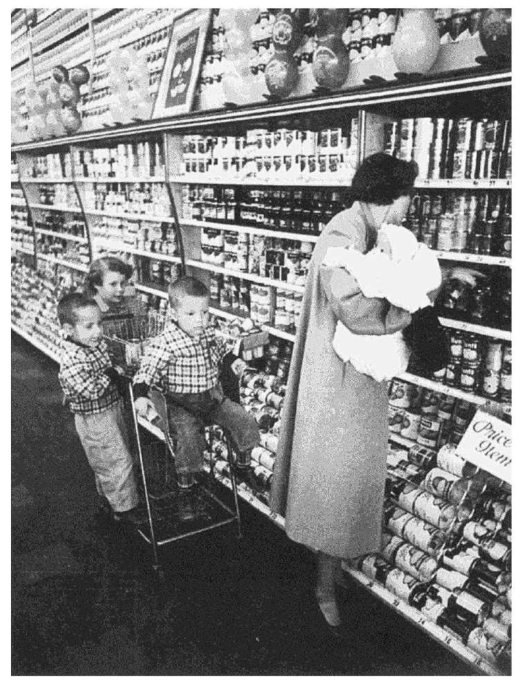
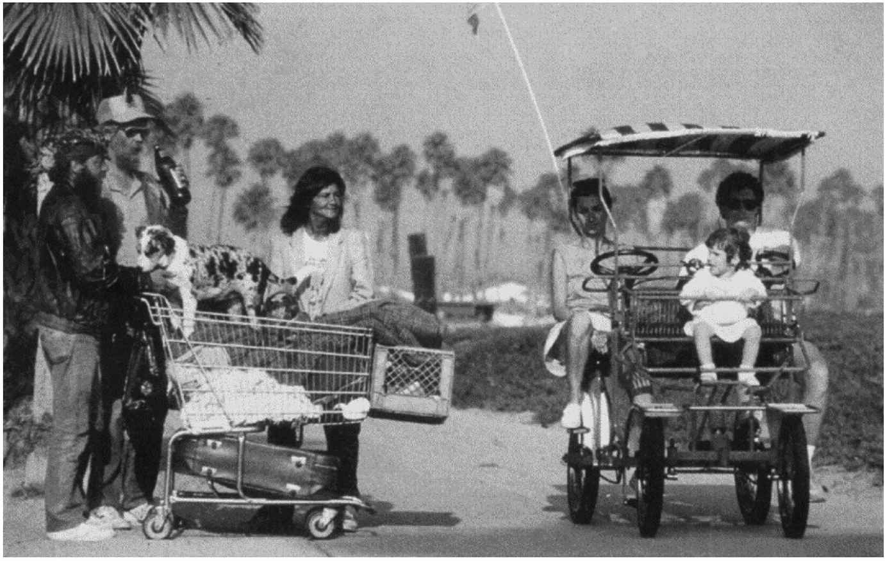

战后的繁荣与衰退
第二次世界大战之后的四分之一世纪是资本主义的黄金时代。世界工业在这些年中的年增长率是空前的5.6%，世界贸易则是7.3%。这一长期的繁荣是由若干因素引起的，其中包括弥补战时损失的需要、对战时所忽略的商品和服务的井喷式需求、源自诸如电子设备和喷气式运输机等军事技术的民用副产品，以及朝鲜战争、越南战争期间和整个冷战年代中的巨大军事购买力。
在这一繁荣时期，跨国公司充当了全球经济扩张的先锋。它们现在首次获得全球性运作所需的技术，因为第二次工业革命带来了某些革新，其中包括集装箱运输、卫星通信和计算机现金管理系统。这类设施使这一时期的中等跨国公司有可能在11个不同的国家生产22种产品。跨国公司现在不仅向第三世界国家输出制成品，而且还输出工厂；在第三世界国家，计日工资常常并不比跨国公司本国的计时工资高，有时还更低。因此，在这四分之一世纪的繁荣时期，跨国公司的年平均增长率为10%，而非跨国公司仅为4%。
这一全球性的繁荣渗透到工人阶级，至少工业化国家的情况如此。实际工资大幅提升，为周末短途旅行、年度假日旅游以及私人住宅、轿车和其他耐用品的赊购提供了足够的钱。这使许多经济学家相信他们制定的货币政策和财政政策创造了必需的购买力，可以避免过去那种繁荣——衰退的经济周期。然而事实证明，同1929年大崩溃前夕时的经济学家一样，他们也犯了过于乐观的错误。
20世纪70年代中期，这一繁荣让位于“滞胀”——经济停滞和通货膨胀的一种难堪结合。战时的损失已得到弥补，大战期间被推迟的消费需求已得到满足，扩展中的工业生产力最终引起产能过剩。这种产能过剩导致出现剩余物质，因为生活在第三世界的大多数人至少没有作为消费者被包括在这一全球繁荣中。海外工厂支付的低工资限制了当地的购买力。世界银行的统计数据表明，1950年，工业化国家的人均国民收入是不发达国家的10倍。到1965年，这一比率是15：1，据世界银行预计，到20世纪末，将变成30：1。

图298 1954年1月，《生活》杂志介绍了一些郊区生活先行者的情况。报道反映出种族隔离的居住模式，被刊载的都是白人家庭。照片中的这个家庭享受了“一种舒适安全的生活，他们拥有五位数的收入，这对许多美国人来说似乎是终极经济目标”。12291美元的年收入让他们在丹佛六居室外带一个自建房的款项之余，还可挥霍一笔——买一台389美元的电视机。
后“二战”繁荣的一个根本结构性软肋是，它依靠的是一体化全球生产，却缺乏全球消费。这种不平衡因为第三世界国家出口原材料的价格不成比例的下降和它们所负的沉重外债而变得更趋严重。到1986年，第三世界国家的外债已接近1万亿美元，债务的利息付款占去了第三世界国家出口收入的四分之一至一半。为了应付利息付款，第三世界各国政府减少了它们的社会支出和进口额。但是，所有工业国的三分之一的出口物都已去向第三世界，所以第三世界进口额的减少迅速增加了第一世界的失业人数。在经济合作与发展组织的15个成员国中，平均失业率在1973年为3.4%，1979年为5%，1983年为8.3%，1995年为11.3%。失业率又转而引起了对保护性关税的需求，这令人回想起20世纪20年代对大萧条的开始起了促成作用的保护主义。
这些经济上的打击驱散了第二次世界大战后的信心和欣悦。经济学家们原本以为他们终于打破了解决繁荣与不景气的循环，这时却表示出困惑和担心。在国际高级研究所联合会的一次会议期间（1983年6月），来自15个国家的学者们一致认为，资本主义经济和社会主义经济的运行都不再令人满意。“我们正生活在一个失序的星球上，它建立在经济学概念的基础之上，这些概念与当今现实毫无关系……我们想对那些基本信条提出质疑，看看能否对它们加以修改或调整。”[1]修改或调整的必要在联合国国际劳工组织1996年的报告中体现得十分明显，该报告指出，全世界有30%的劳动力失业或不充分就业。
社会影响
20世纪70年代中期之后的经济挫折给经济学家们造成了智识上的不安，而对许多已习惯于较富裕的生活的人来说，这些挫折则具有多得多的破坏性。20世纪70年代，美国联邦政府鼓励农民增加销往海外市场的产品产量，以抵消日渐上升的贸易逆差。农民们热情地响应，因此，农业出口额从1971年的80亿美元猛增到1981年的438亿美元。接着，由于华盛顿在苏联入侵阿富汗后禁止对其出口，美元的估价过高——这实际上是在1984年向所有的美国出口商品征收了32%的附加费——以及财政上陷入困境的第三世界各国政府减少了各种产品的进口，国外市场骤然萎缩。1981年至1983年间，美国出口农产品的价格水平下降了21%，总量下降了20%。
美国农民发现自己一下子处于经济拮据的状态之中，这尤其是因为许多人为了响应政府号召，提高产量，以高利率大量借贷购买土地和设备。破产的农民流离失所，家庭农场的数目从20世纪30年代中期的680万这一高峰下降到1980年的280万，进而下降到1994年的190万。美国人口调查局发现，1985年，家庭农场的收入仅为非农场家庭收入的四分之三，农场居民的贫困率为24%，而非农场居民的贫困率为15%。由此产生的情绪与社会的混乱反映在自杀率中，1984年，艾奥瓦州诸农业县的自杀率是全国平均线的两倍。

图299 图为在加利福尼亚州的圣巴巴拉，一个富裕的家庭骑脚踏车经过一群无家可归的人们。20世纪80年代，不断上涨的房屋价格和大多数精神病院关门结合在一起，使得流落街头的美国人不断增加。据估计，20世纪80年代后期，无家可归的美国人在30万到300万之间，确切数字取决于如何定义无家可归者和估测者的政治目的。
由于失业率居高不下，这种混乱在都市社区也表现得和乡村一样明显。虽然20世纪80年代和90年代的失业率远低于大萧条时期，但许多城市工人认为自己现在的境况恶化了。在20世纪30年代，失业被认为通常是周期性的，因此，一定会随着由不景气到繁荣的过渡而告终。今天，人们已认识到不能作这种推测，因为有以下几个理由。首先，随着工厂由人工昂贵的国家迁移到人工低廉的国家，西方工人不再能要求和得到他们已开始习以为常的高工资。其次，自动装置和机器人的普及正在取代办公室里的“白领工人”和工厂里的“蓝领工人”。整个西方世界的失业人数从1970年1月的1000万上升到1983年1月的3100万。确实，虽然工厂工作正在减少，但服务性工作（例如银行出纳员、快餐店员、酒店职员、娱乐与健康的服务员）正在迅速地增加。但是，服务性行业的工资大大低于制造业。
这些数据的人权意蕴已在1985年的一份报告中阐述得很清楚，这份报告是一个由22名成员组成、调查美国饥饿问题的医生特别工作组提交的，该工作组的负责人是哈佛大学公共卫生学院院长J.拉里·布朗。这个特别工作组除了在寻找“饥饿的面孔”的过程中采访那些挨饿者本人外，还采访了州长、教师、部长和社会工作者。这些调查者断定大约有2000万美国平民正在挨饿，其具体的含意就是，他们无法购买足够的日常食物，周期性地发生食物断绝的情况。这些医生说：“在美国，饥饿是一场全国性的流行病。我们的判断是，美国的饥饿问题在最近10年至15年比以往任何时候都要更普遍，更严重……我们相信，今天，饥饿和营养不良在全国各地都是严重的问题。事实上，我们无论去哪个城市、哪个州，都会发现那里存在着广泛的饥饿。”[2]
同这份报告一样揭露了美国饥饿问题的是福坦莫大学1993年10月的一份报告，里面有社会学家发布的年度“社会健康指数”。它通过分析人口调查局提供的关于十六大社会问题的报告来检测美国社会的福利，这些问题包括失业、青少年自杀、中学退学率和可购住房的供应量等。根据该报告的统计，美国最好的年份是1973年，当时的指数达到了77.5。但在1993年，即能够获得完整数据的最近的年份，该指数降到了38.8，该项研究的负责人的评价是“糟透了”。[3]